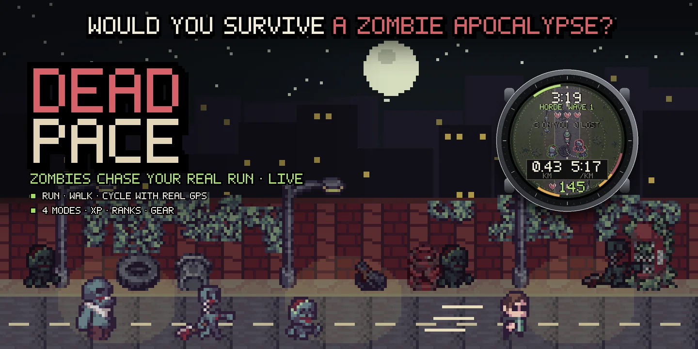
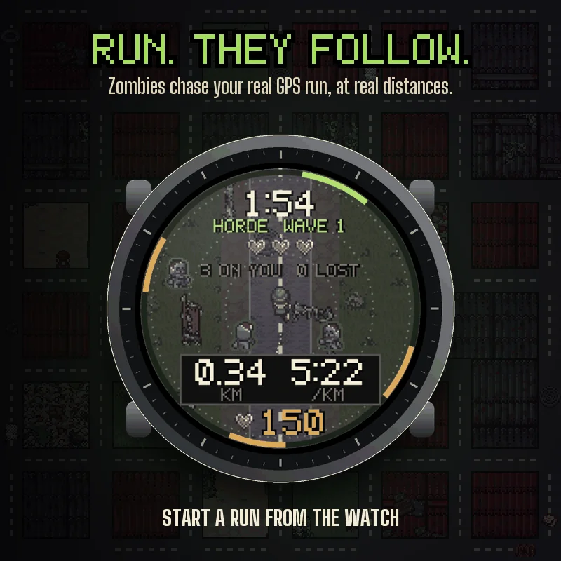
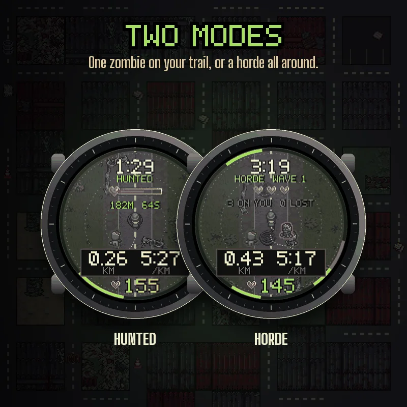
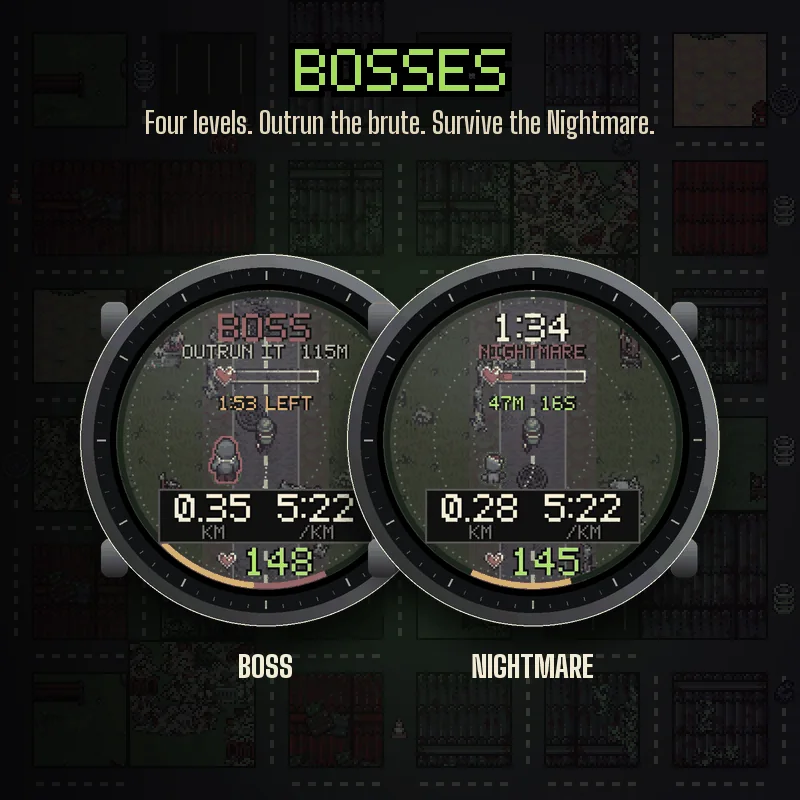
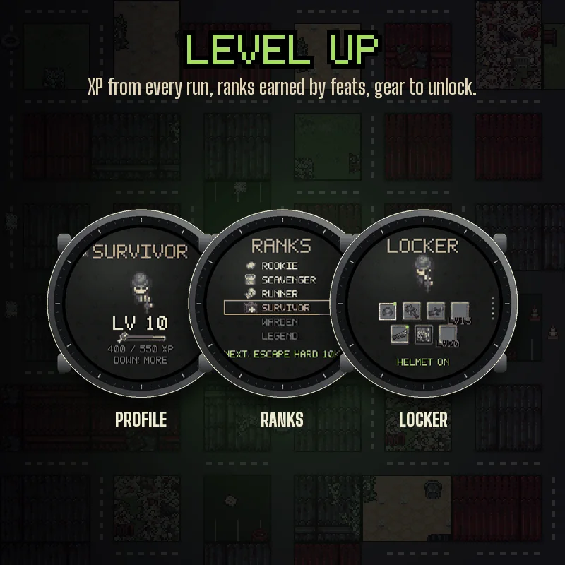
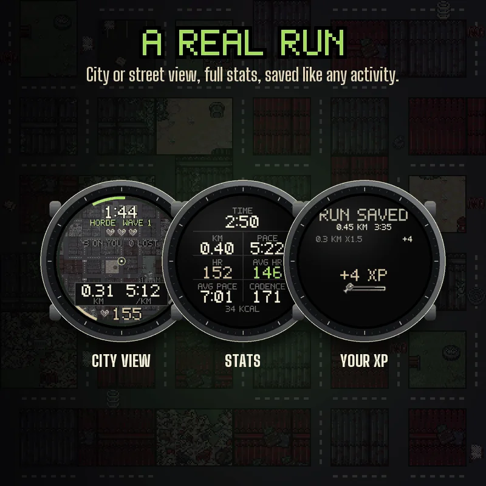

How to start on the watch
Press START, select Dead Pace in the list, choose your mode, level and sport, then START HUNT. Hold UP on that screen for the settings (they are also in Garmin Connect).
Zombies that follow your real run
Dead Pace records a real run, walk or cycle with GPS and turns it into a live chase. The zombies are placed at real distances from you, in metres, and they move at a speed based on your own average pace, so the game works for any runner and on a bike. Slow down and they catch up.
Two modes
HUNTED: after your head start, one zombie wakes up at the start line and follows your exact trail. The gap is shown in metres and seconds. Now and then it sprints for 20 seconds: the watch buzzes twice and shows SURGE, time to push. HORDE: waves of zombies appear all around you and walk straight at you. Go far enough and they lose you. Get too close and they bite: you have hearts, the big brute bites for two. A ring around the screen shows where they come from and the clearest way out.
Four levels and bosses
Easy, Normal, Hard and Nightmare change the head start, your hearts and how fast they are. On Normal and harder, a boss chases you for two minutes at regular distances: keep your pace and it gives up. Nightmare is a score mode: how long can you hold out?
Level up
Every saved run gives XP from the distance you held during the chase, escapes, close calls, zombies shaken off and bosses outrun. You keep your XP even when you get caught. Six ranks are earned by feats, not by grinding. Unlock a helmet, weapons and new maps for your runner. Your record keeps your runs, distance, escapes, best wave and best Nightmare time.
A real activity
The run is saved to Garmin Connect like any other, with the zombie gap as an extra graph. START pauses, BACK adds a lap. Swipe or press UP and DOWN for three views: the pixel street with your runner, a radar, and a stats page with time, distance, pace, heart rate, average heart rate, average pace, cadence and calories, with the chase still shown at the bottom. Heart rate is also on the game screen, coloured by your zones. On a bike, speed replaces pace.
Make it yours
Scenery: an overgrown street, or a whole city seen from above with the zombies coming down the streets. Four styles for distance and pace. Alert distance, vibrations, sprint alert, beep, units.
Good to know
Needs GPS: made for outdoor runs, walks and cycling, not for the pool. If the GPS drops, in a tunnel for example, the zombies freeze too. When you pause, they wait. Your progress is stored on the watch: removing the app erases it. Nothing leaves the watch except the activity you save.
Pixel art: PostApocalypse asset pack by TheLazyStone.
Compatible with the Garmin AMOLED watches listed below. English only.